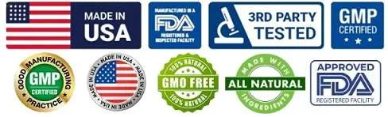

Understanding a supplement becomes much easier when you know exactly what each ingredient does. NeuroSharp names six ingredients on its label — no vague "proprietary blend" hiding the details. Here's a closer look at each one, in plain language.
1. Ginkgo Biloba Leaf — Circulation and Antioxidant Support
Ginkgo Biloba acts as an antioxidant and vasodilator, associated with improved cerebral blood flow. More oxygen and nutrients reaching brain cells is connected with better memory, focus and alertness, and Ginkgo's antioxidant properties are also associated with protecting neurons from oxidative stress.
2. St. John's Wort Extract — Mood and Emotional Balance
Well known for mood-balancing effects, St. John's Wort is traditionally used to support emotional stability and clear thinking under pressure. Important: it's also one of the more interaction-prone herbal supplements, known to reduce the effectiveness of antidepressants, blood thinners, and hormonal birth control, among others. See our medication interactions guide for the full picture.
3. N-Acetyl L-Carnitine HCl — Energy and Clarity
This amino acid derivative is associated with mitochondrial energy production in neurons. That's connected with reduced brain fog and steadier mental energy, supporting brain energy metabolism throughout the day.
4. Phosphatidylserine Complex — Memory and Neural Communication
As an essential phospholipid in brain cell membranes, Phosphatidylserine is associated with healthy neural communication, memory formation and overall cognitive wellness.
5. Huperzine-A — Learning and Recall Enhancement
Extracted from Chinese club moss, Huperzine-A acts as a natural acetylcholinesterase inhibitor. This is associated with increased acetylcholine levels, which relate to recall, learning capacity and overall cognitive performance.
6. Bacopa Monnieri — Memory and Neuroprotection
An ancient Ayurvedic nootropic, Bacopa Monnieri is associated with memory retention, learning speed and mental processing efficiency. Its antioxidant and neuroprotective properties are also connected with reduced brain inflammation.
How the Six Ingredients Are Organized
Looking at the formula as a whole, several categories explain the ingredient selection. Read the full breakdown in our how does NeuroSharp work article:
- Neural communication — Bacopa Monnieri and Huperzine-A
- Circulation and energy — Ginkgo Biloba and N-Acetyl L-Carnitine
- Mood and cellular health — St. John's Wort and Phosphatidylserine
Why Ingredient Transparency Matters
The supplement market is full of long ingredient lists and attractive promotional claims. A clear understanding of what's actually inside a formula helps you evaluate whether it's appropriate for your needs. NeuroSharp names its six ingredients plainly, but exact milligram amounts should be confirmed on the physical Supplement Facts panel before ordering. See what adults say about this transparency in our NeuroSharp reviews roundup.
Check Today's NeuroSharp Pricing
30 capsules per bottle, backed by a 180-day guarantee.†
Order NeuroSharp NowFrequently Asked Questions
Is NeuroSharp a proprietary blend?
No. All six ingredients are individually named on the label rather than grouped into a single undisclosed blend.
Should I check with a doctor before taking these ingredients?
Yes, particularly given St. John's Wort's known interactions with several common medications.